Your phone finds itself on a map by trusting that time runs at slightly different speeds for the satellites overhead and for you down on the ground. Turn that correction off, and your blue dot drifts about six miles off course by the end of the day. GPS & relativity
That is not a figure of speech. The atomic clocks aboard GPS satellites tick faster than the ones on Earth, by about 38 millionths of a second every day, and the whole system works only because engineers built the difference in before launch. The reason traces back to a paper Einstein published in 1905, and the paper says something your gut will refuse to accept: there is no universal clock. Time is not a fixed backdrop ticking the same for everyone. It bends.
That is the thing about modern physics. The headlines sound like nonsense and are true anyway, confirmed to more decimal places than almost anything else in science. The catch is that your common sense was trained on medium-sized things moving at ordinary speeds: a rock, a thrown ball, a car. Step outside that range, to the very fast, the very heavy, or the very small, and the rules you grew up with quietly stop applying.
It turns out reality runs on two rulebooks. One governs the big and the fast: stars, planets, light, anything moving near the speed limit. That is relativity, and it is mostly one man. The other governs the very small: atoms, electrons, single grains of light. That is quantum mechanics, and it took a dozen people arguing for thirty years. Both are spectacularly well tested. Both are deeply strange. And here is the part nobody has cracked: the two rulebooks contradict each other, and no one knows how to fit them together.
This is a tour of the strangest ideas in both books, one at a time, with the clearest plain-language picture I could find for each. I am going to keep the analogies honest, which means telling you where each one breaks, because the broken edge is usually where the real strangeness lives.
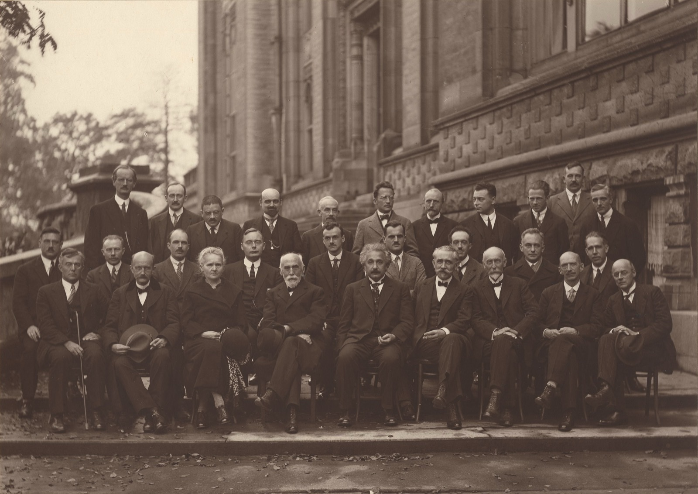
Rulebook one
The big and the fast
Everything in this half comes from relativity, two theories Einstein published ten years apart. The whole thing falls out of one stubborn fact about light.
A speed limit that cheats
Light has a speed limit, and it cheats
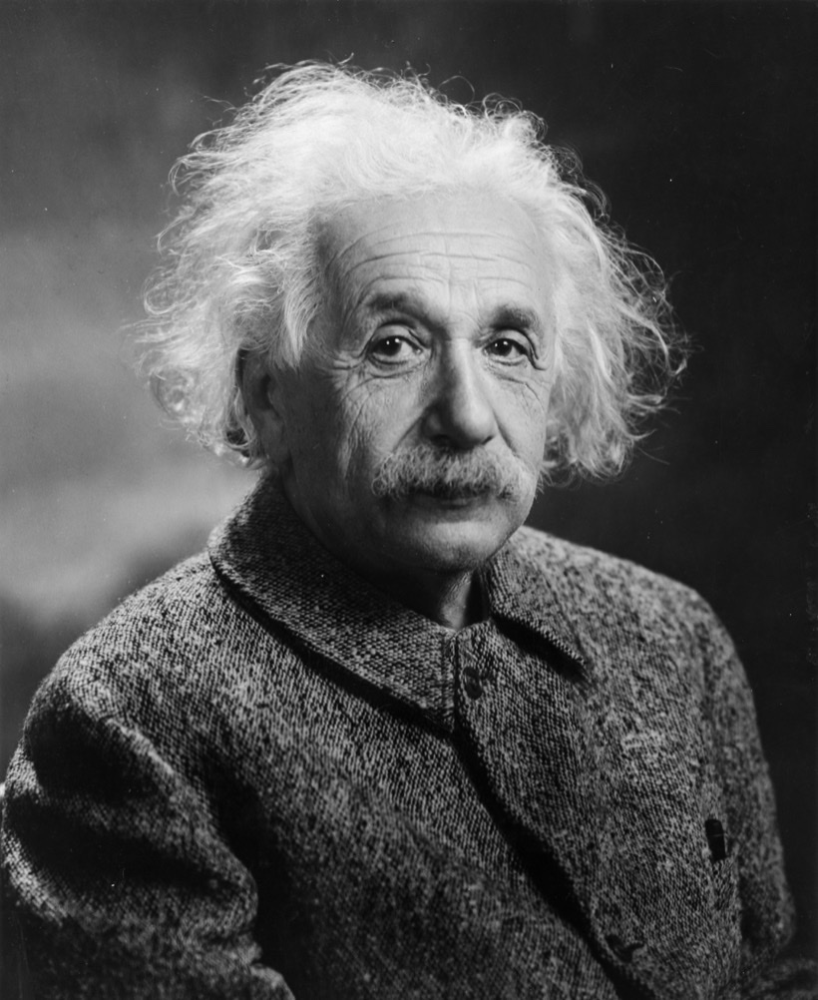
Light travels at about 670 million miles per hour, the same speed for everyone, no matter how fast they are moving toward it or away from it. That second part is the one that breaks things.
Speeds normally add up. Throw a baseball at 20 mph from a truck doing 60, and someone on the roadside clocks it at 80. Walk toward the front of a moving train and the ground sees the train's speed plus yours. This is so obvious it feels like arithmetic.
Light refuses to play. Switch on a flashlight and the beam leaves you at the speed of light. Now chase that beam at 99 percent of its speed. Common sense says it should crawl away from you at the leftover one percent. Instead it races off at the full speed of light, exactly as if you had never moved, and a bystander watching the chase measures that same speed too. Run as hard as you like; light always pulls away from you at the one fixed speed, and nobody can ever agree to disagree about what that speed is.
That nearly broke physics. In 1887, Albert Michelson and Edward Morley built an instrument delicate enough to detect the Earth's motion through space by racing light beams in different directions. They found nothing. The light came back at the same speed every way they pointed it, in every season. Michelson-Morley
Einstein took the strange result at face value and asked what would have to be true for it to make sense. The answer: if everyone measures light at the same speed regardless of how they move, then the things we thought were fixed, the length of a second and the length of a yard, cannot be. They have to stretch and shrink from one observer to the next, by exactly the amount needed to keep light's speed the same for everybody. Speed is distance divided by time. If the speed will not move, distance and time must.
So the speed limit is real, no object and no signal can reach it, let alone pass it, and the price of that limit is that space and time themselves are up for negotiation. The next three ideas are the bill coming due.
Moving clocks run slow
A moving clock runs slow, for real
A clock in motion ticks slower than a clock at rest, and the faster it moves the slower it ticks. This is not an illusion or a glitch in the instrument. Time itself runs slow for the thing that is moving.
Here is the cleanest way to see why, and it uses nothing but the one fact from the last chapter. Build a clock out of light. Two mirrors face each other, and a pulse of light bounces straight up and down between them; each round trip is one tick. Simple, and its speed is set by the speed of light.
The light clock
Why moving makes a clock tick slowly
Now put that clock on a fast rocket and watch it fly past. From your seat on the ground, the light no longer goes straight up and down, because between leaving the bottom mirror and reaching the top one, the whole clock has slid sideways. So you see the light travel a longer, slanted path. But light cannot speed up to cover the extra ground. It is stuck at the one speed. A longer path at the same speed takes more time, so each tick of the passing clock takes longer. The moving clock runs slow.
And the light clock is nothing special. Every clock on that rocket runs slow by the same amount: the atomic vibrations, the chemistry, the heartbeat of the astronaut inside. If only the light clock slowed, you could hold it next to a wristwatch and catch the mismatch, and the whole idea would fall apart. What slowed was time itself.
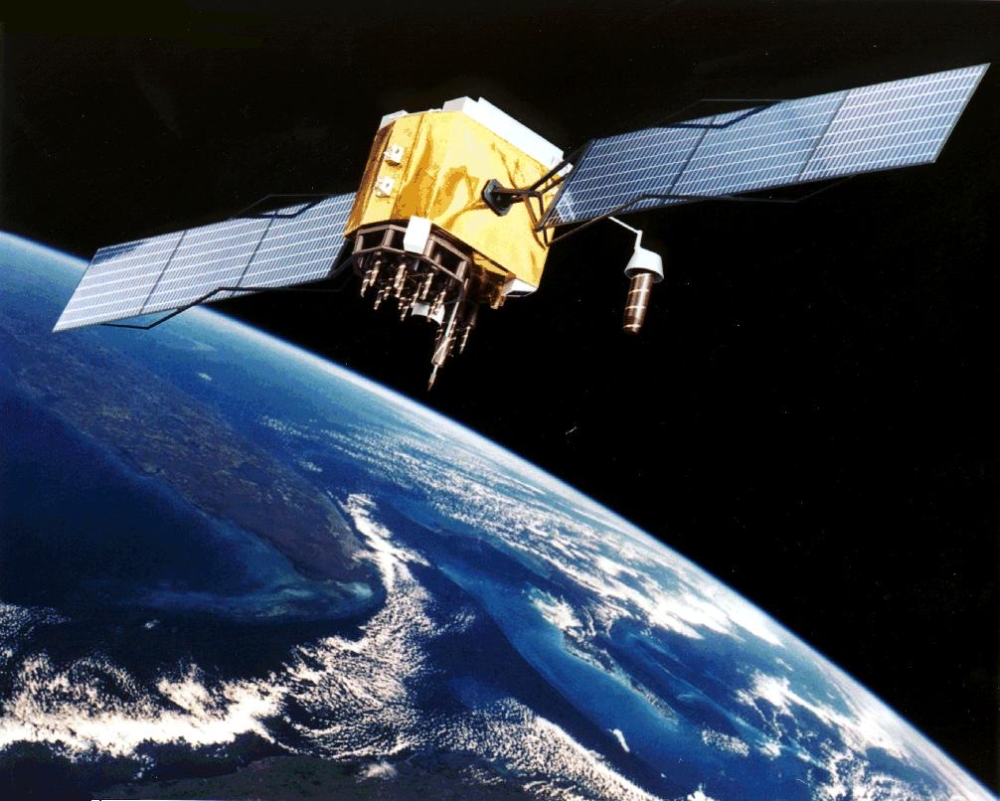
You can measure this on an ordinary Tuesday. The atomic clocks in GPS satellites move fast enough, around 8,700 mph, that this effect slows them by about 7 microseconds a day. A second effect from gravity, coming up shortly, pushes the other way and wins, but the motion part is real, predicted, and built into your phone. NIST
Nature ran the experiment long before we did. The upper atmosphere is constantly making particles called muons, heavy cousins of the electron, when cosmic rays slam into the air about nine miles up. A muon falls apart in about 2.2 millionths of a second on average. Even at nearly the speed of light, that is only enough time to cross a few hundred yards before it disintegrates, so almost none should reach the ground. They reach the ground in floods. From our point of view their internal clock is running slow, stretched by a factor of ten or more, so they live long enough to finish the trip. muon survival solid
Mass is frozen energy
Mass is just energy, sitting still
E = mc squared. The most famous equation in the world says mass and energy are the same thing in different clothes, and the exchange rate between them is the speed of light, squared.
Because the speed of light is an enormous number, and squaring it makes it absurd, a tiny amount of mass is worth a staggering amount of energy. The energy locked inside a single gram of anything, a paperclip, a raisin, is about 21 kilotons of TNT, the scale of the bombs that ended the Second World War. mass-energy You cannot easily pry it loose; that is a separate and difficult problem. But it is in there.
The Sun pries it loose. Deep in its core it fuses hydrogen into helium, and the helium comes out weighing a hair less than the hydrogen that went in. That missing mass leaves as light and heat, exactly as E = mc squared demands. The bookkeeping: the Sun turns about 4 million tons of its own mass into pure energy every second. Stanford Solar Center good It has been doing this for four and a half billion years and is barely middle-aged.
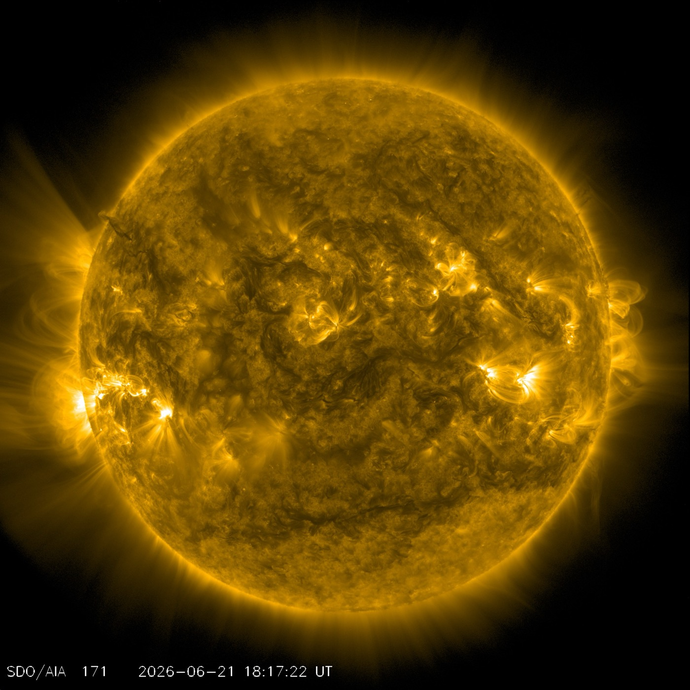
Gravity is a shape
Gravity is the shape of space and time
Gravity is not a force tugging objects together. It is the bending of space and time around anything with mass, and things fall because they are coasting along the straightest path through a shape that happens to be curved.
This is general relativity, Einstein's 1915 sequel, and it is the strangest idea in the first rulebook. Start with the picture you have probably seen: a bowling ball on a stretched rubber sheet, sagging into a dip, with marbles circling the dip like little planets. It is a nice image. It is also wrong in a way worth understanding, because the broken edge is the whole point.
The rubber-sheet picture cheats twice. First, it explains gravity using gravity: the marbles roll into the dip only because real, ordinary, downward gravity is pulling them onto the sheet. Take that away and nothing rolls anywhere. why the sheet cheats Second, and bigger, it shows space bending but quietly drops time, and for everyday falling it is mostly the bending of time that matters.
Here is a cleaner picture. Forget the sheet. Imagine two friends standing a few feet apart on the equator, each told to walk due north in a perfectly straight line. Neither ever steers toward the other. Yet as they walk, they drift closer and closer, and at the North Pole they collide. Nothing pulled them together. They walked dead straight the whole way. The surface under them was curved, and on a curved surface, straight paths converge.
Two straight paths that meet
Why "straight" can still bring you together
Gravity is that, in four dimensions. The Earth bends the spacetime around it. You, and a dropped apple, and the Moon overhead are all just coasting along the straightest available path through that curved spacetime, and the paths lean toward the Earth. No force required. The apple is not yanked down; it is following a straight line through a shape that tips toward the ground.
And the part the trampoline leaves out: the strongest bending, for slow everyday things, is in time, not space. Clocks run slower the deeper they sit in gravity, and an object's natural path through spacetime tips toward wherever time runs slowest. You are being pressed into your chair right now because the floor sits where time runs a hair slower than it does at your head.
That last sentence is measurable. In 2010, physicists at the US National Institute of Standards and Technology compared two of the best atomic clocks ever built after raising one of them by about a foot. The higher clock, sitting where Earth's gravity is a sliver weaker, ran faster. The gap adds up to roughly 90 billionths of a second over a lifetime, and they measured it across one foot of height. NIST clocks solid Your head really does age faster than your feet.
Point general relativity at something heavy and the predictions turn spectacular, and they keep coming true.
The bent starlight
Einstein's theory said the Sun's gravity should bend starlight skimming past it, nudging the stars' apparent positions by 1.75 arcseconds, twice what the old physics allowed. In 1919, an expedition photographed stars near the Sun during a total eclipse and found the shift. It made Einstein famous overnight.
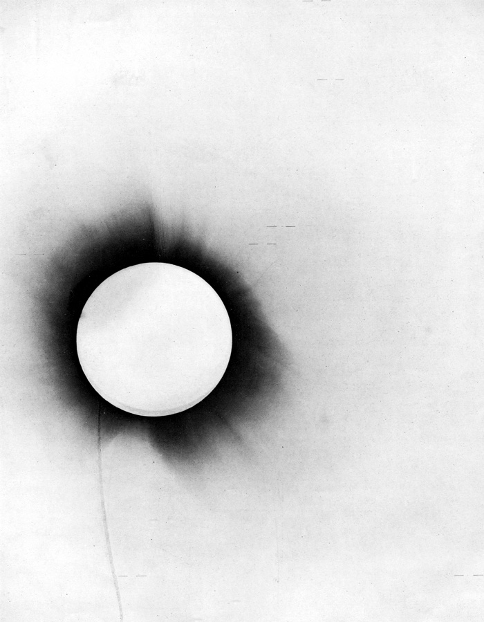
The 1919 photographs were noisy, and there is a long argument about whether Eddington nudged his data toward the answer he was hoping for. Later experiments pinned the bending down to far better precision, so the conclusion stands even though the original plates were rough. Max Planck Society good
The ring of a galaxy
Bend starlight hard enough and a whole galaxy becomes a lens. Light from something directly behind it gets smeared into a ring. We find them through the telescope, exactly where the theory says they should be.
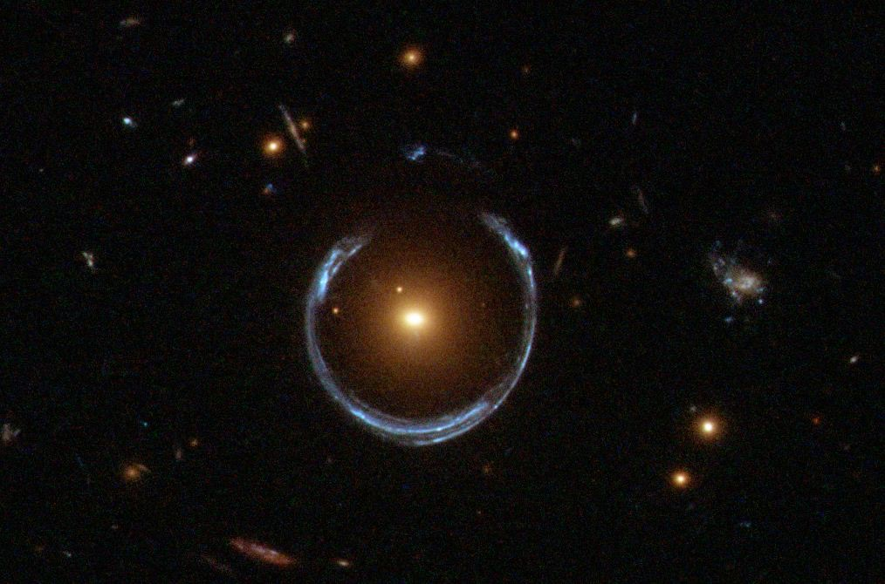
The hole you can photograph
Pack enough mass into a small enough space and spacetime curves so steeply that not even light, moving at the universe's top speed, can climb back out. That is a black hole, and the boundary of no return is the event horizon. For decades they were just a solution to Einstein's equations that seemed too strange to be real. In April 2019, a network of radio telescopes released the first image of one: the giant black hole at the heart of the galaxy M87, 55 million light-years away and as heavy as six and a half billion Suns. EHT image
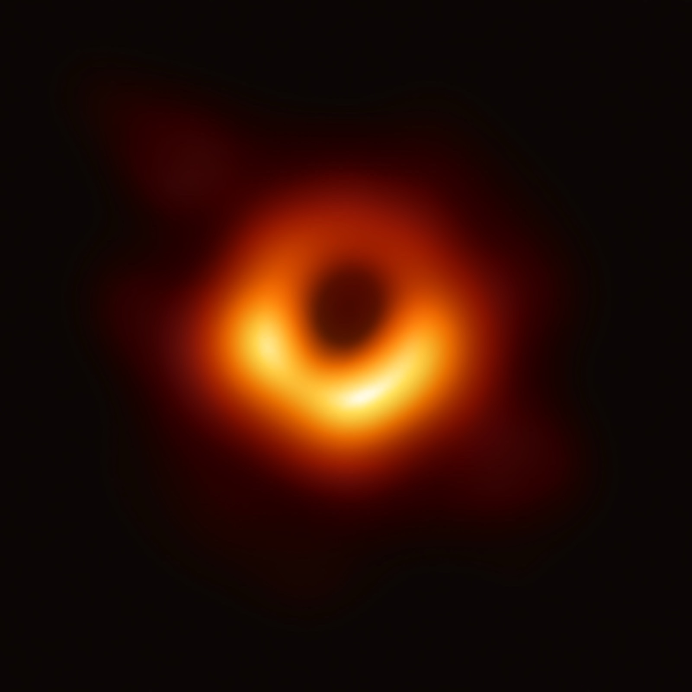
Two honest caveats, because this image gets oversold. What you are looking at is the shadow, not the horizon itself; the bending of light makes the dark patch larger than the true edge of no return. And it is a radio image stitched together by algorithms, not a snapshot through a lens. It is still, unmistakably, a picture of a black hole.
One last prediction, because it may be the most absurd of all. When two black holes crash into each other, they shake spacetime hard enough to send ripples spreading outward at the speed of light. In 2015 an instrument called LIGO felt one wash over the Earth: two black holes, about 36 and 29 times the mass of the Sun, that had merged 1.3 billion years ago. The ripple stretched LIGO's two-and-a-half-mile arms by less than one ten-thousandth the width of a proton, and we caught it. LIGO solid
Rulebook two
The very small
Everything so far has still been a world of definite things: the clock ticks slow, but it ticks; the apple falls, but it is somewhere. Shrink down to single particles and even that goes away.
Down at the scale of atoms and electrons, the strangeness changes character. In the big world, things have definite properties and relativity just bends how different observers measure them. In the small world, things stop having definite properties at all until you look, and the act of looking changes the answer. This is quantum mechanics, and it is the best-tested theory in the history of science. It is also the one that makes working physicists shrug and say nobody really understands why it works, only that it does.
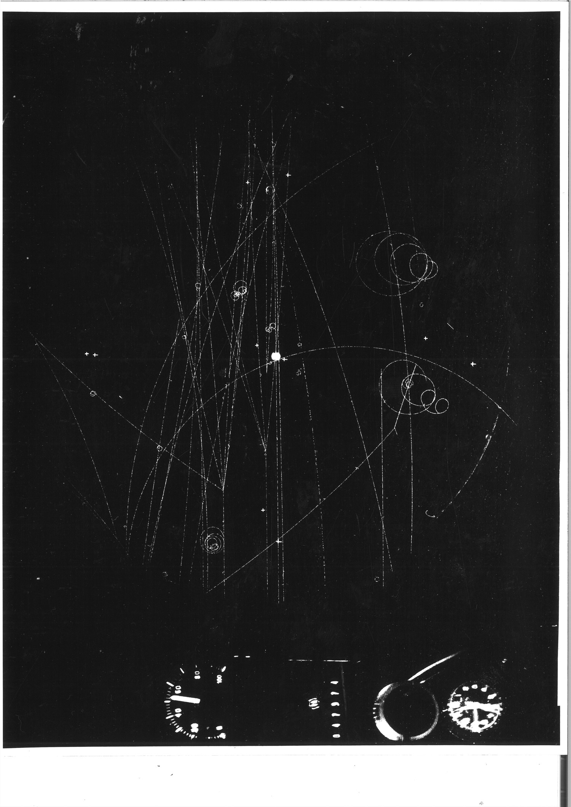
Everything is a wave
Everything is a wave until you check
Fire single particles, one at a time, at a barrier with two narrow slits in it, and they slowly build up a striped pattern that only waves can make, as if each particle went through both slits at once and rippled into itself on the far side. This is the double-slit experiment, and it is the beating heart of the whole strange business.
Walk through it slowly, starting with water. Drop two stones in a still pond and the ripples spread and overlap. Where two crests meet, they pile into a bigger crest; where a crest meets a trough, they flatten to nothing. The result is a fixed pattern of busy stripes and calm bands. That adding and cancelling is called interference, and it is the unmistakable signature of waves.
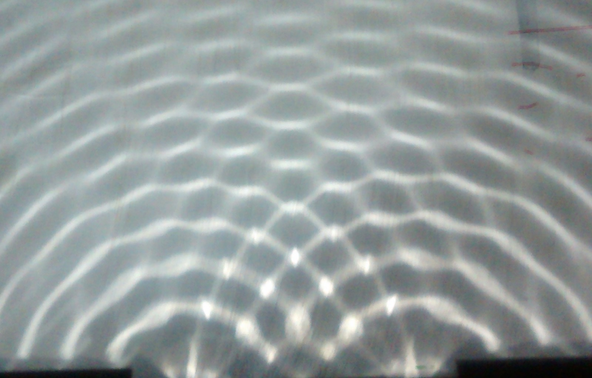
Now do it with light through two slits and you get the same stripes on the far wall: bright bands where the light waves add, dark bands where they cancel. Fine. Light is a wave; that was settled two hundred years ago.
Here is where it goes wrong. Turn the source down so low that it releases one particle of light at a time, a single photon, with long gaps between them. Each one lands on the far wall as a single dot, one tiny hit, exactly like a particle. So far so sensible. But let the dots pile up over hours, and they slowly assemble themselves into the same striped interference pattern.
One dot at a time, into stripes
Single particles fired one by one, where they land on the screen
Each lonely photon, with no other photon anywhere near it, lands in a way that obeys the stripes. The only thing it has to interfere with is itself. A single, indivisible particle somehow went through both slits, overlapped with itself like a wave, and then arrived as one dot. Electrons do it too. So do whole atoms, and even molecules built from hundreds of atoms. Feynman It is not a quirk of light. It is how matter behaves once you get small enough.
Now the part that should bother you. Put a tiny detector at the slits to catch which one each particle actually goes through. Do that, and the stripes vanish. The particles fall into two plain clumps, one behind each slit, like ordinary pellets. The instant you force the particle to commit to a single path, it stops behaving like a wave. Look, and it is a particle. Do not look, and it is a wave trying every route at once.
I have to be careful with the word "look," because this is exactly where physics gets hijacked into mysticism. Looking does not mean a conscious human watching. It means any physical interaction that records which way the particle went: a detector, a stray air molecule, a single bounced photon. No mind is required. The universe does not care whether you, personally, were paying attention. It cares only whether the which-way information leaked out into the world. decoherence
One consequence is worth a short detour. If a particle is really a spread-out wave, then part of that wave can sit on the far side of a wall the particle does not have the energy to climb. Every so often the particle simply turns up over there, having crossed a barrier it had no business crossing. This is quantum tunneling, and it is not a loophole, it is load-bearing. The Sun runs on it: the protons in its core do not actually have enough energy to fuse, and never would, except that they tunnel through the wall between them. The Sun shines because the rules are slightly fuzzy. fusion by tunneling
Nothing is decided yet
Nothing is decided until you measure it
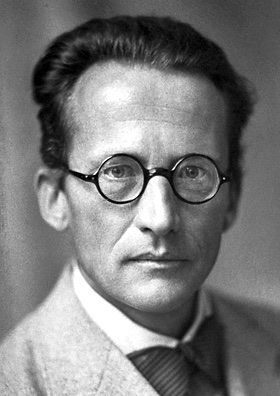
Before you measure it, a quantum particle is not in one state or another. It is in a blend of all its possible states at once, called a superposition, and measuring it forces it to pick one. The blend is not a gap in your knowledge. It is the particle's actual condition.
The double-slit already showed you this. "Went through both slits" is a superposition of left-slit and right-slit, held at the same time. But the idea deserves its own name, because it leads to the most famous thought experiment in physics, and nearly everyone gets its point backwards.
In 1935, Erwin Schrodinger described a cat in a sealed box. Inside is a trace of radioactive material that, over the next hour, has a fifty-fifty chance of decaying. If it decays, it trips a hammer that shatters a vial of poison and kills the cat. Radioactive decay is a quantum event, so until it is measured, the atom sits in a superposition: decayed and not-decayed at once. And here is the trap. The cat's life is wired straight to that atom. So by the rules, before you open the box, the cat is in a superposition too: alive and dead at the same time. Schrodinger's cat
Here is what nearly everyone gets wrong. Schrodinger was not delighted by this. He invented the cat to ridicule the idea. He thought a half-alive, half-dead cat was plainly absurd, and he was pointing at it to say look how ridiculous your theory gets when you scale it up. The cat was a complaint, not a celebration.
The complaint is fair, and it has a name: the measurement problem. Why do we never see a superposed cat, or a superposed anything bigger than a molecule? The leading answer is decoherence. A single electron can hold a clean blend because it is isolated. A cat is enormous and constantly touching its surroundings: air, light, its own warmth. Every one of those touches is a tiny measurement, leaking out which-way information, and they happen so fast and so relentlessly that any blend collapses to a single outcome almost instantly. The cat is alive or dead within a sliver of a second, long before you open the box, because the universe is already measuring it. The smaller and more isolated a thing is, the longer it can hold the blur. A cat does not stand a chance. decoherence
You cannot know it all
You cannot know everything at once
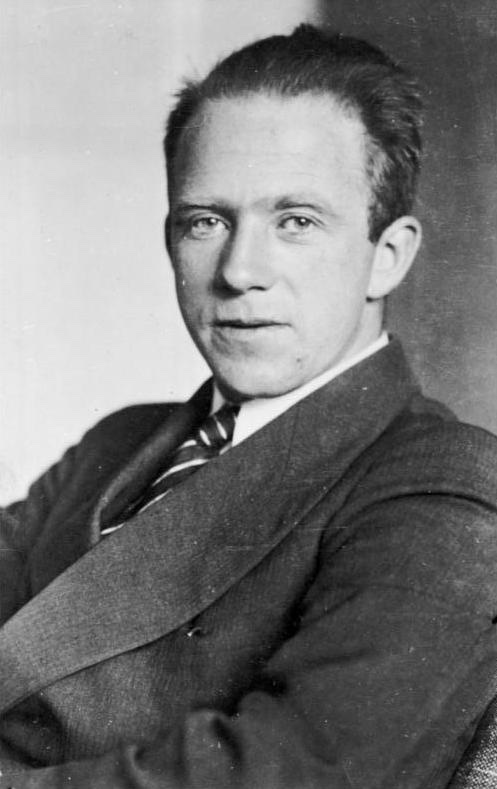
There is a hard limit on how much you can know about a particle at one time. The more precisely you pin down where it is, the more hopelessly fuzzy its speed becomes, and the other way around. This is Heisenberg's uncertainty principle, and the limit is not about clumsy instruments. It is built into what a particle is.
The usual explanation is wrong, so let me hand you the wrong one first, because you will meet it everywhere. The wrong version says: to see a particle you have to bounce something off it, like light, and the bounce knocks it off course, so measuring its position disturbs its speed. True as far as it goes, but it makes the limit sound like a practical nuisance, as if a gentler instrument could beat it. Nothing can. The limit holds even in principle, even for a perfectly prepared particle that nobody has touched.
The honest version comes straight out of the last two chapters: a particle is a wave. And here is a fact about every wave, one you can hear.
Sharp in one means smeared in the other
The same trade-off you can hear in any sound
A long, pure flute note has a definite pitch. But ask exactly when it happens and there is no answer; it is smeared across its whole duration. Now clap your hands. The clap happens at a definite instant, but it has no pitch at all, it is a sharp click, a smear of every frequency at once. You cannot have both. A sound that is sharp in time is fuzzy in pitch, and a sound that is sharp in pitch is spread out in time. This is not a limitation of your ears. It is what waves are.
For a quantum particle, position is like the timing and speed is like the pitch, and they trade off in precisely the same way, for precisely the same reason. A particle with a razor-sharp position is a tiny spike of a wave, and a spike, like a clap, is built from a huge spread of speeds. A particle with a razor-sharp speed is a long, even ripple stretched across all of space, with no location to call its own. Pin down one and the other smears. Not from any clumsy nudge; a wave simply cannot be sharp in both at once. uncertainty principle
Two particles, one fate
Two particles can share a single fate
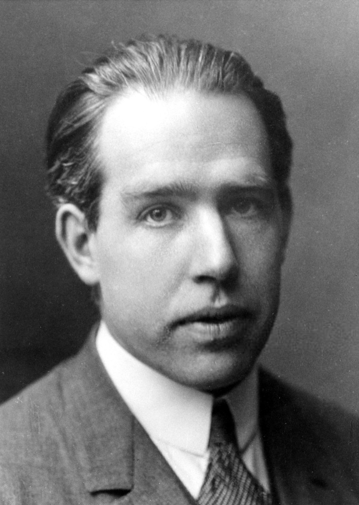
Two particles can be linked so tightly that they no longer have their own separate properties, only a shared one. Measure one and you instantly know the matching result for the other, even if it has drifted to the far side of the galaxy. Einstein hated this so much he called it "spooky action at a distance." He was right that it is spooky, and wrong that it meant the theory was broken.
The link is called entanglement, and it is the strangest entry in either rulebook, so let me build it carefully, including the analogy everyone reaches for and exactly why it is not enough.
The tempting picture is a pair of gloves. I take a pair, drop the left one in a box and the right one in another, mail one to Tokyo and keep one here, without peeking. When I open mine and see the right glove, I know on the spot that the Tokyo box holds the left one. No magic, no signal. The gloves were always a left and a right; I simply did not know which was where. Knowledge traveled. Nothing else did.
If entanglement were only that, nobody would care. The reason it shook physics is that it is provably not that, and pinning down the difference took the single most important piece of reasoning in the field.
In 1964 a physicist named John Bell found a way to tell the two stories apart with an actual experiment. The idea: take many entangled pairs and measure them, but not always the same way, randomly varying the angle of each measurement. If the particles are like gloves, each carrying a secret answer fixed in advance, and neither can signal the other faster than light, then their results, averaged over many tries and many angles, can only agree up to a certain ceiling. Bell worked out that ceiling exactly. Then he showed that quantum mechanics predicts the particles will sail past it. Bell's theorem
More agreement than any "decided in advance" can buy
How often the two particles match, as the detectors are turned apart
So you run it. And nature beats the ceiling, every time, exactly as quantum mechanics says it will. The particles were not gloves with secret answers. They genuinely had no answer until the instant one was measured, and yet when measured, even light-years apart, even with the measurement angles chosen at the last possible moment, their results agree more tightly than any answer-fixed-in-advance story could ever produce. The first careful versions were done by John Clauser in 1972 and Alain Aspect in 1982; by the 2010s the last loopholes were sealed. The three physicists who led that work, Aspect, Clauser, and Anton Zeilinger, shared the 2022 Nobel Prize in Physics. 2022 Nobel solid
Now the discipline this demands, because here is the other thing everyone gets wrong. "Instantly know the result on the far side of the galaxy" sounds like a faster-than-light telephone. It is not, and it provably cannot be. The catch: each measurement, taken on its own, is pure random noise. When I measure my particle I get a random answer; when you measure yours, you get a random answer. Neither of us, staring only at our own stream of results, sees anything but coin flips. The eerie agreement only shows up afterward, when we lay our two lists side by side, and that comparison has to travel between us the slow way, by phone, by email, by something that obeys the speed limit. Entanglement gives you correlation without communication. Spooky, yes. A usable signal, no. The cosmic speed limit holds. no-communication theorem
The unfinished part
Two rulebooks, no master key
Both rulebooks are right. Relativity has never failed a test. Quantum mechanics has never failed a test. And the two of them flatly contradict each other.
Relativity describes a smooth, continuous spacetime, a stage that bends but never jumps. Quantum mechanics describes a jittery world of discrete jumps, blurs, and chance, where nothing is settled until it is measured. For almost everything, this never matters, because the two books govern different sizes. Relativity runs the big stuff; quantum runs the small stuff; the two rarely have to stand in the same room.
But there are places where something is both very heavy and very small, so both books apply at once, and they hand back nonsense. The center of a black hole. The first instant of the Big Bang. Ask the equations a question about those, and they answer "infinity," which is physics for "I do not know." Stitching the two into a single theory of quantum gravity is the biggest unsolved problem in physics, and it has been open for most of a century. String theory and loop quantum gravity are the best-known attempts. Neither has been confirmed. quantum gravity
So that is honestly where we stand. We have two of the most precisely tested theories ever written, they describe a reality that breaks nearly every intuition you were born with, and they do not fit together. Somewhere beneath both of them there is presumably a single, deeper rulebook that would explain why the universe insisted on being this strange. Nobody has read it yet.
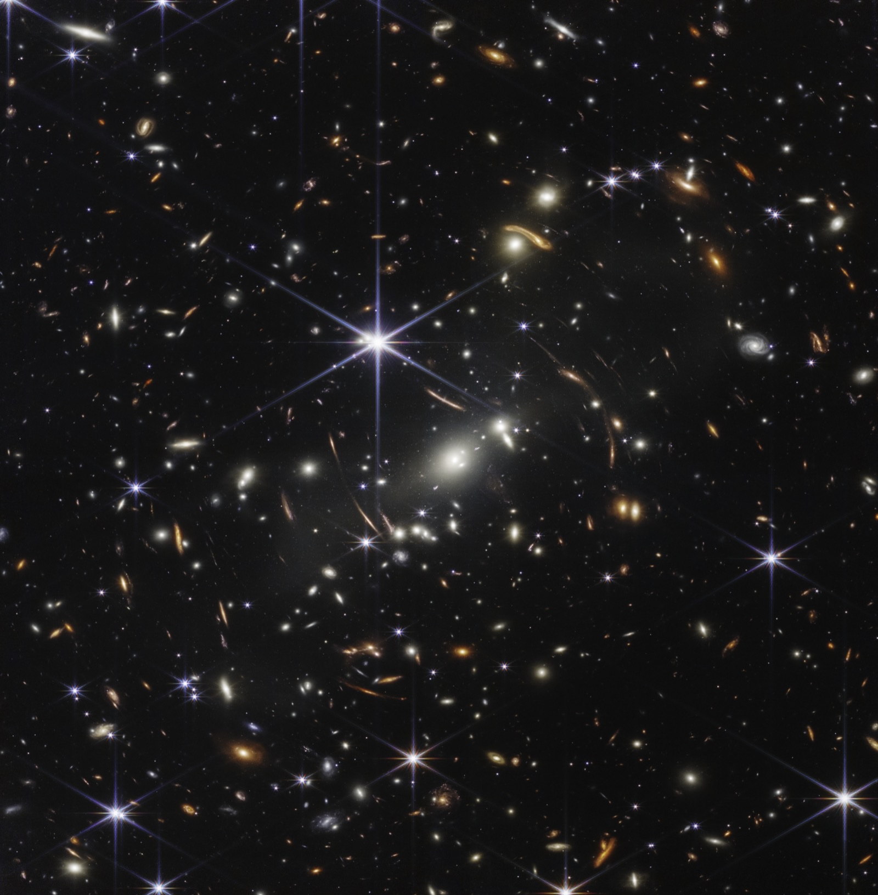
Your common sense is not wrong, exactly. It is just local, finely tuned for a creature of a certain size, moving at a certain speed, who never had to deal with the very fast, the very heavy, or the very small. The universe was under no obligation to make sense at scales you would never visit. The astonishing thing is not that it turned out strange out there. It is that, with enough patient experiments, we figured out the strangeness anyway.
The fine print
Sources, and how I kept it honest
Physics is the friendliest possible subject to fact-check, because the numbers are pinned to primary sources and the experiments are public. Every figure here was checked against the source listed below, and the few places where a popular claim is shaky (the noisy 1919 eclipse data, the rounded "4 million tons," the misread of the uncertainty principle) are flagged in the text rather than smoothed over.
The full list, 30 sources, grouped by chapter
Light, time, and motion
- NIST / CODATA. Speed of light in vacuum (exact, 299,792,458 m/s). physics.nist.gov
- American Physical Society (2007). November 1887: Michelson and Morley report their failure to detect the ether. aps.org
- Pogge RW, Ohio State University. Real-World Relativity: the GPS Navigation System (the 45, 7, and 38 microsecond figures). astronomy.ohio-state.edu
- NIST (2022). Einstein's Relativity Makes GPS Work. nist.gov
- Particle Data Group. Muon mean lifetime (2.197 microseconds). pdg.lbl.gov
- Experimental testing of time dilation (Rossi-Hall, Frisch-Smith). Wikipedia. wikipedia.org
- Scientific American. How can galaxies recede faster than light? (expansion of space). scientificamerican.com
- Davis TM, Lineweaver CH (2004). Expanding Confusion: misconceptions of cosmological horizons. PASA. arxiv.org
E = mc squared
- Mass-energy equivalence. Wikipedia (the energy in one gram). wikipedia.org
- Stanford Solar Center. How much mass does the Sun lose? solar-center.stanford.edu
- International Astronomical Union (2015). Resolution B3, nominal solar luminosity. iau.org
General relativity
- Max Planck Society. A solar eclipse sheds light on physics (the 1.75-arcsecond prediction; 1919). mpg.de
- NIST (2010). Clock experiment demonstrates that your head is older than your feet. nist.gov
- The Bowling Ball and the Trampoline. Why the rubber-sheet analogy misleads (Ask a Physicist). askamathematician.com
- European Southern Observatory (2019). Astronomers capture first image of a black hole (M87, 6.5 billion solar masses). eso.org
- LIGO / Caltech (2016). Gravitational waves detected 100 years after Einstein's prediction (GW150914). ligo.caltech.edu
- Wheeler JA, Ford K (1998). Geons, Black Holes, and Quantum Foam (the "matter tells spacetime how to curve" line).
The quantum world
- Feynman RP. The Feynman Lectures on Physics, Vol. III, Ch. 1 (the double-slit and complementarity). feynmanlectures.caltech.edu
- Tonomura A, et al. (1989). Demonstration of single-electron buildup of an interference pattern. Am. J. Phys. pubs.aip.org
- Physics World (2002). The most beautiful experiment in physics (reader poll). physicsworld.com
- Davisson C, Germer L (1927). Diffraction of electrons by a crystal of nickel. Wikipedia. wikipedia.org
- Stanford Encyclopedia of Philosophy. Measurement in quantum theory (Schrodinger's cat). plato.stanford.edu
- Stanford Encyclopedia of Philosophy. The role of decoherence in quantum mechanics. plato.stanford.edu
- Von Neumann-Wigner interpretation (the "consciousness causes collapse" fringe view). Wikipedia. wikipedia.org
- Stanford Encyclopedia of Philosophy. The uncertainty principle (Kennard inequality, not measurement disturbance). plato.stanford.edu
- Astrophysics notes, Princeton. Stellar fusion and quantum tunneling. astro.princeton.edu
Entanglement
- Einstein A, Podolsky B, Rosen N (1935). Can quantum-mechanical description of physical reality be considered complete? Phys. Rev. 47, 777. link.aps.org
- Stanford Encyclopedia of Philosophy. Bell's theorem (and Bell's own "Bertlmann's socks"). plato.stanford.edu
- Nobel Prize in Physics 2022. Aspect, Clauser, and Zeilinger, for experiments with entangled photons. nobelprize.org
- No-communication theorem (entanglement cannot transmit information). Wikipedia; Peres & Terno, Rev. Mod. Phys. 76 (2004). wikipedia.org
Cover image: the first image of a black hole (M87), Event Horizon Telescope Collaboration, CC BY 4.0. Portraits, telescope images, and experiment photographs are individually credited in their captions; all are public domain or Creative Commons. Figures are drawn in code for this post.
{kind=link}